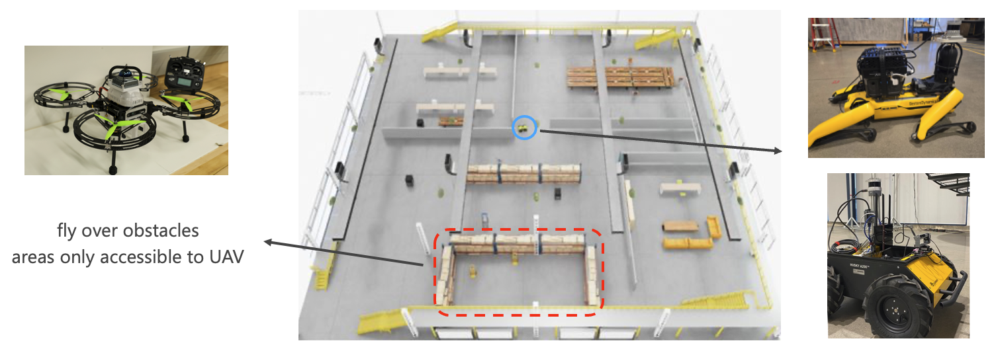
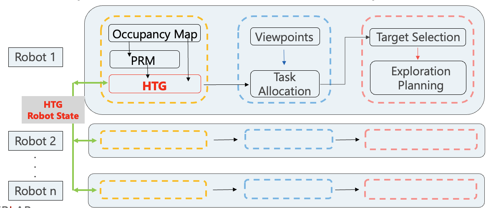
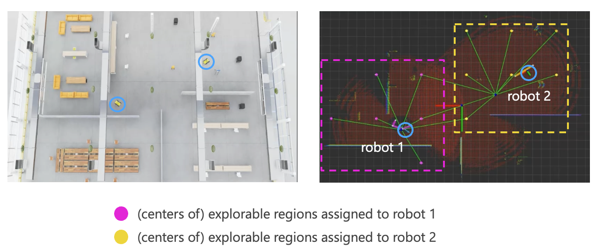

Heterogeneous Exploration with HTG and Graph Voronoi Partition
Overview
This ongoing project explores heterogeneous multi-robot exploration using a shared Heterogeneous Topological Graph (HTG) and graph Voronoi partitioning for scalable coordination.
The system combines the complementary strengths of UGVs and UAVs — ground robots efficiently cover accessible regions, while aerial robots handle elevated or occluded areas — improving exploration efficiency and completeness.
Current work at CMU’s CERLAB, 2025.
Introduction & Motivation
We aim to build a heterogeneous robot system that enhances the efficiency of exploring and mapping large unknown environments by leveraging the complementary strengths of different robot types.

System Concept
We introduce a shared Heterogeneous Topological Graph (HTG) that summarizes regional exploration status, connectivity, and traversal paths.
This allows multiple robots to reason about which regions remain unexplored and how to allocate them efficiently using graph Voronoi partitioning.


Preliminary Result
Demo Video – Multi-UGV exploration using shared HTG and graph Voronoi-based task allocation in simulation.